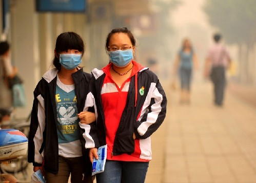

根据《北京市空气重污染应急预案(试行)》，空气重污染分为4个预警级别，由轻到重顺序依次为预警四级、预警三级、预警二级、预警一级，分别用蓝、黄、橙、红颜色标示，预警一级(红色)为最高级别。
预警四级(蓝色)：
预测未来1天出现重度污染
应急措施：提醒儿童、老年人和呼吸道、心脑血管疾病患者等易感人群减少户外运动。倡导公众及排放大气污染物的单位自觉采取措施减少污染物排放，如增加施工工地洒水降尘频次和道路清扫保洁频次；排污单位进一步采取措施，减少污染物排放等。
预警三级(黄色)：
预测未来1天出现严重污染或持续3天出现重度污染
应急措施：除健康防护提醒措施和建议性污染减排措施，增加强制性污染减排措施，如按空气重污染期间道路清扫保洁和冲洗分预案确定的重点道路，增加道路清扫保洁和冲洗频次，减少交通扬尘污染；减少土石方施工开挖规模，建筑拆除等施工必须采取有效的覆盖、洒水等扬尘控制措施。
预警二级(橙色)：
预测未来持续3天交替出现重度污染或严重污染
应急措施：施工工地停止土石方和建筑拆除施工，停止渣土车、砂石车等易扬尘车辆运输；按空气重污染期间工业企业停、限产分预案确定的名单，对有关企业分别实施停产或限产减排30%污染物的措施；在现有“禁放”、“禁烧”范围的基础上，全市范围禁止烟花爆竹燃放、露天烧烤。
建议中小学、幼儿园停止体育课、课间操、运动会等户外运动。
预警一级(红色)：
预测未来持续3天出现严重污染
应急措施：在橙色预警“停产、停工、禁放、禁烧”的基础上，全市范围内按规定实施机动车单双号行驶，其中北京市公务用车在单双号行驶的基础上，再停驶全部公务车辆的30%，公共交通运营部门加大运力保障力度。
中小学、幼儿园停课，企事业单位根据情况可实行弹性工作制；建议停止大型露天活动；一般人群应尽量避免户外活动。